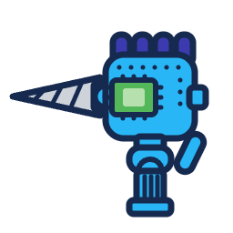

The mark — a robot hand gripping a cone drill bit (v1.1 redraw of the original add-on icon). In-app, the header stays text-only; the mark is for the add-on store, favicon & docs. SVG + PNG (128/256/512) in assets/.
assets/